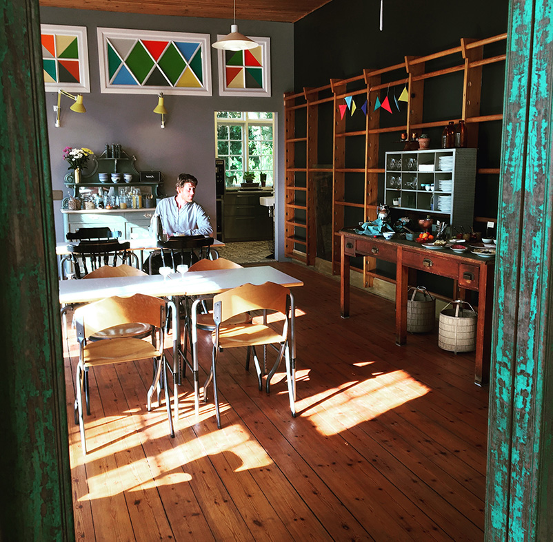
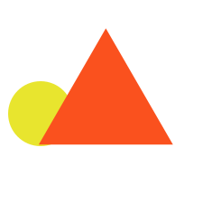

The Story
GYM BISTRO first opened its’ doors in 2020. It’s situated inside the charming Fjelde Guesthouse, near Saksköbing, Lolland. Our dining hall used to be a gymnasium, since the house itself used to be a children’s school. In the spirit of all this, we try to keep our restaurant a bit playful.
We are located in one of Denmarks main agricultural areas, so we prepare our food from some of Lolland’s finest produce. Our menu changes frequently based on seasons and moods. We like to keep it simple, honest - but most importantly - lipsmacking good.

